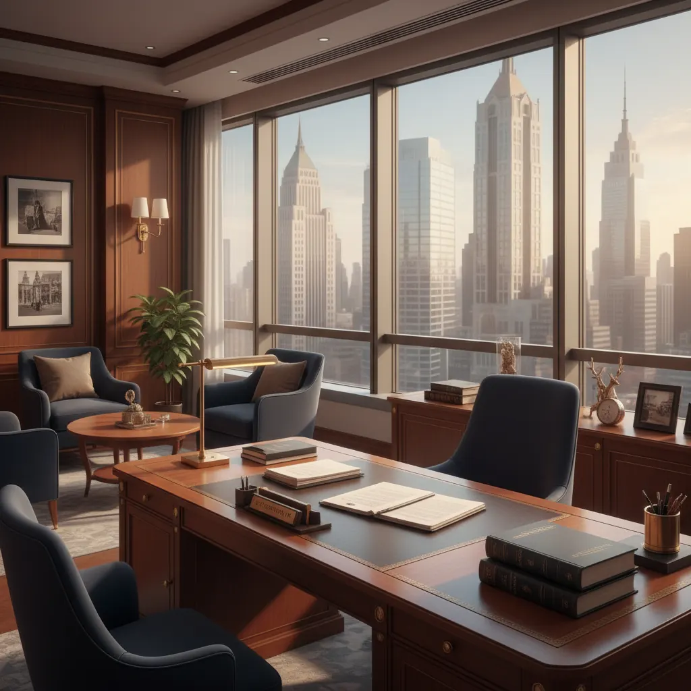

About Mohammed Fasi Uddin
A dedicated legal professional with over 10 years of experience delivering exceptional results for clients across multiple practice areas.
- Years experience
- 10+
- Cases won
- 1,200+
- Success rate
- 98%

Professional Biography
Mohammed Fasi Uddin is a distinguished legal advocate renowned for his exceptional track record in delivering favorable outcomes for his clients. With a career spanning over 10 years, he has established himself as one of the most respected legal professionals in the region.
His approach to legal practice combines deep legal knowledge with strategic thinking and unwavering dedication to client advocacy. He believes that every client deserves personalized attention and a tailored legal strategy that addresses their unique circumstances.
Throughout his career, Mohammed has successfully handled over 1200 cases across various legal domains, maintaining an impressive 98% success rate. His expertise spans criminal defense, civil litigation, family law, and corporate legal services.
What sets Mohammed apart is his commitment to staying current with legal developments and his ability to leverage modern legal technology to benefit his clients. He regularly participates in continuing legal education and is known for his innovative approach to case management.
His client-centered philosophy ensures that each case receives the attention it deserves, with clear communication and transparent processes throughout the legal journey.
Core Values
Integrity
Unwavering ethical standards in all legal proceedings.
Excellence
Commitment to achieving the best possible outcomes.
Compassion
Understanding and empathy for clients' situations.
Innovation
Leveraging technology for efficient legal solutions.
Ready to work together?
Experience the difference that dedicated, experienced legal representation can make in your case.